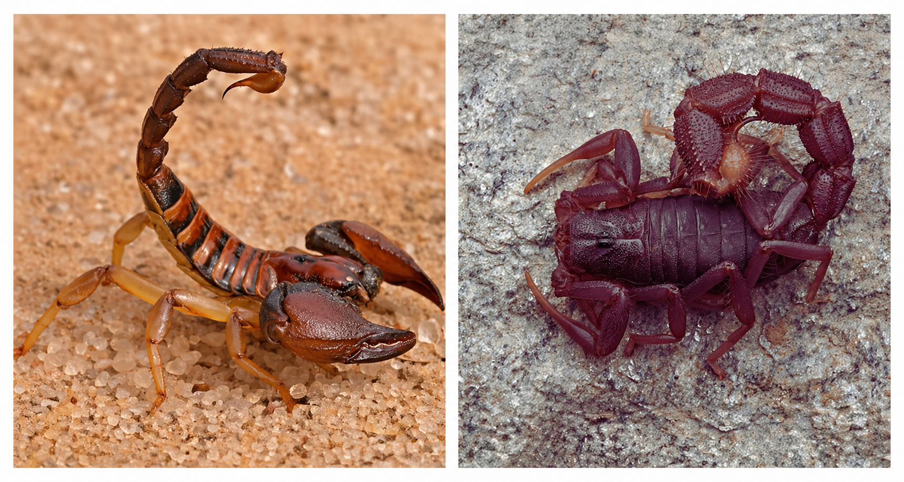

Identificação
O animal apresenta características de escorpião, porém não corresponde aos padrões principais contemplados nesta chave dicotômica interativa.
Observação
Existem diversas espécies de escorpiões com variações de cor, tamanho e distribuição geográfica, que podem não estar incluídas neste recurso didático.
Importância ecológica
Os escorpiões desempenham papel importante no controle populacional de insetos e outros pequenos invertebrados, contribuindo para o equilíbrio ecológico.
A identificação correta é essencial para prevenção de acidentes e para a preservação da biodiversidade.